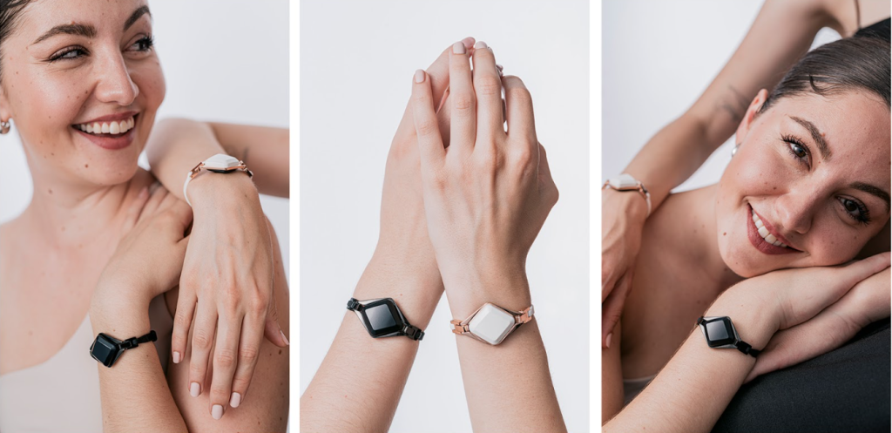

My Google Data Analytics Capstone project. In this case study , we analyze smart device usage data
unlock new growth opportunities and guide marketing strategy for the company utlizing SQL, R and Excel

In this project we clean raw data of Nashville Housing data set in SQL Server in efforts to make it more usable for future analysis

In this project, we explore a global Covid 19 Dataset in SQL Server to uncover possible correlations between including but not limited to; vaccinations, population and infection rates

Tableau Dashboards on Netflix titles, Air BnB listings and Korean Drama recommendations

In this project, we clean data, explore variables that affect bike sales and visualize that data with a Bike Sales Dashboard and Pivot table in Excel